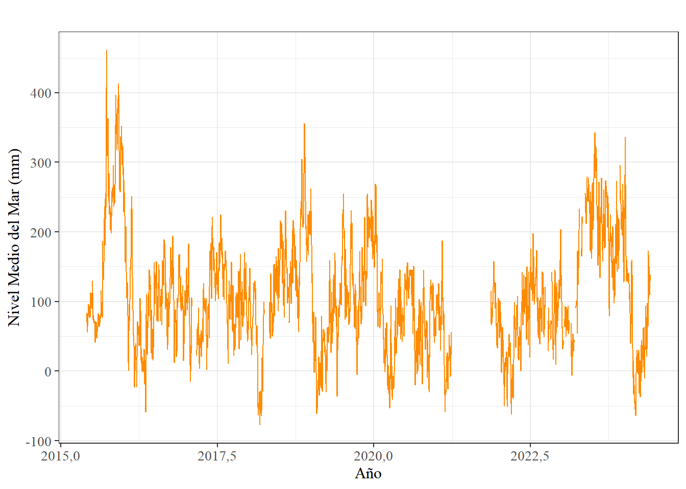
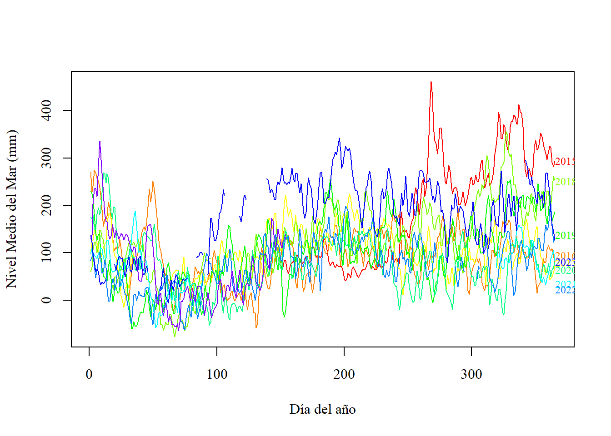
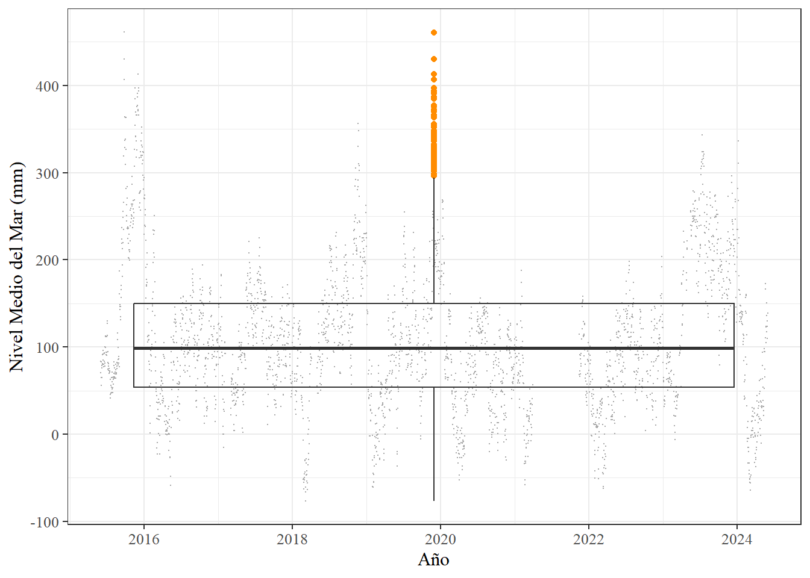
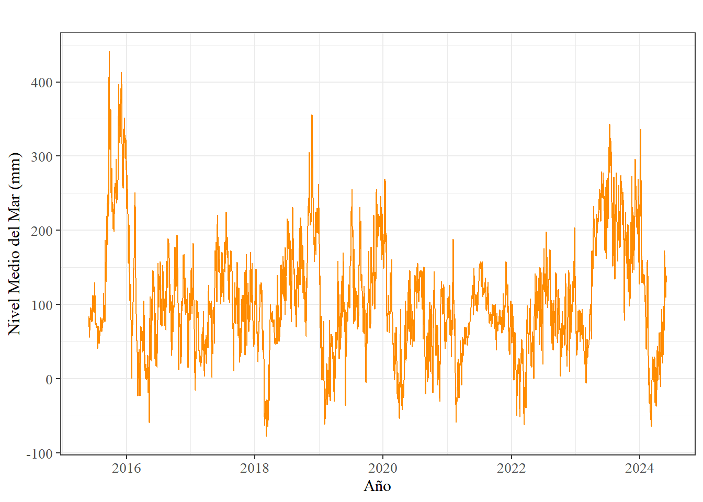
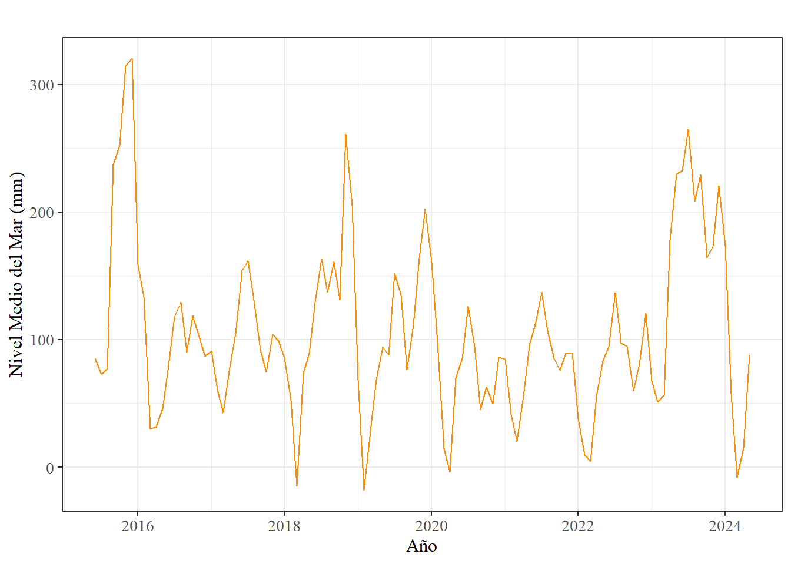
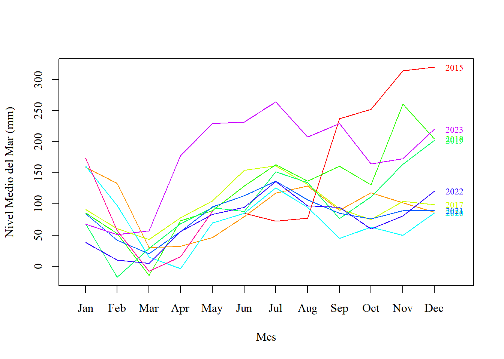
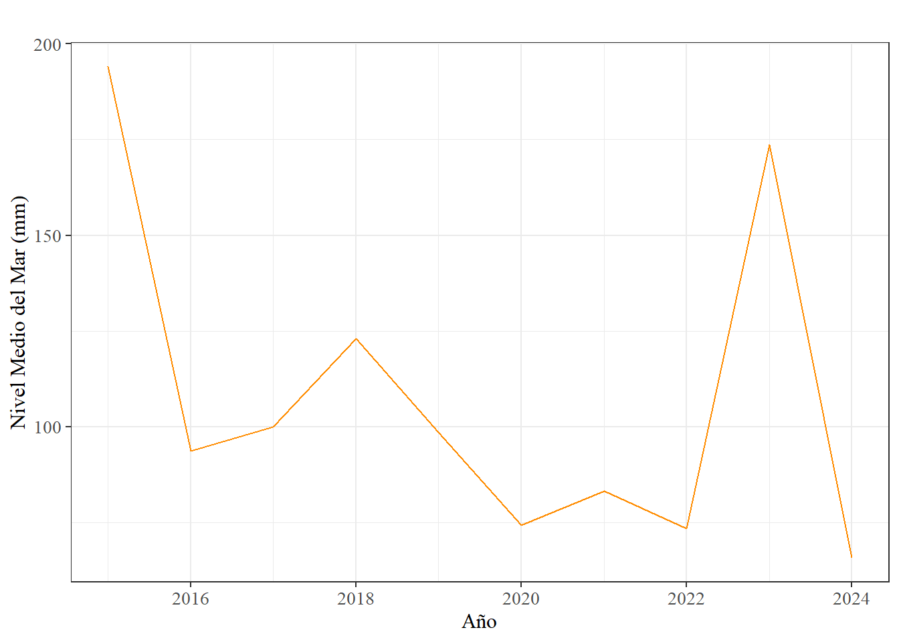
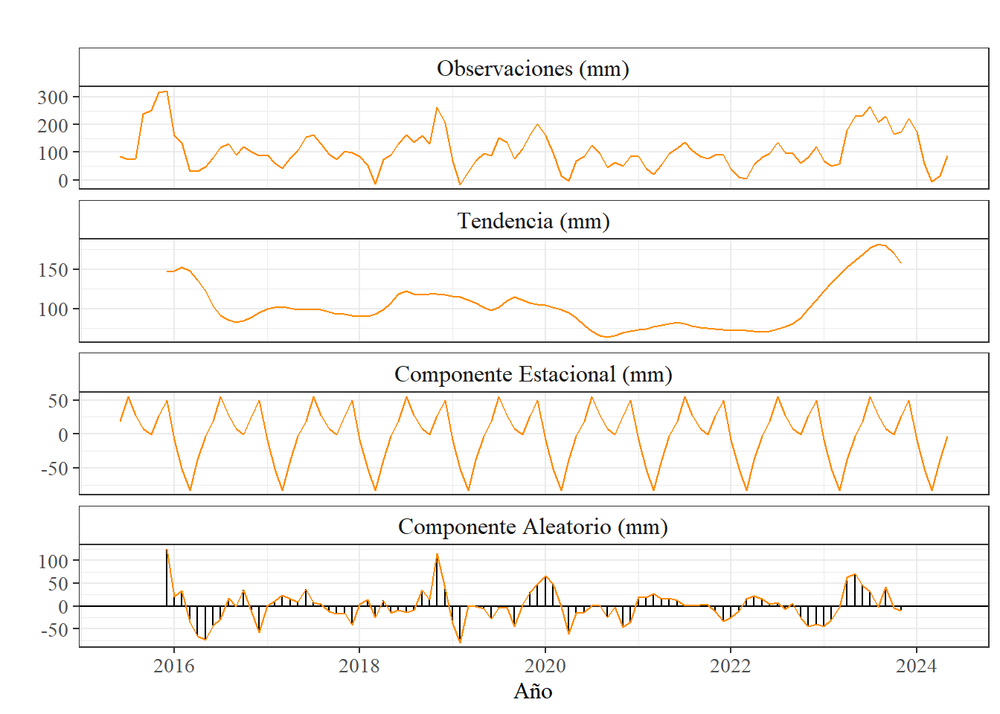
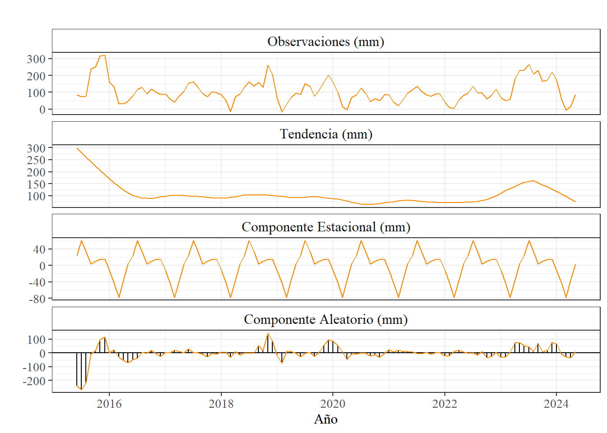

options(OutDec = ",")Cálculo de tendencia de nivel del mar en la Costa Pacífico mediante los datos recolectados por el mareográfo ubicado en Quepos y publicados a través del Centro de Nivel del Mar de la Universidad de Hawai para el periodo comprendido entre los años 2015 y 2024 en calidad Fast Delivery
1 Información de los datos utilizados
Fecha inicial: 01 de junio de 2015
Fecha final: 31 de mayo de 2024
Frecuencia de los datos: diaria
Fuente de los datos: UHSLC
Archivo: d087.csv
Calidad de los datos: Research quality
2 Pasos para la obtención de la tendencia y otros resultados
2.1 Ingreso de los datos
library(readr)
Datos <- read_csv("https://uhslc.soest.hawaii.edu/data/csv/fast/daily/d087.csv", #URL de los datos
col_names = FALSE) #Sin nombre de columnas
head(Datos)# A tibble: 6 × 4
X1 X2 X3 X4
<dbl> <dbl> <dbl> <dbl>
1 2009 10 9 327
2 2009 10 10 279
3 2009 10 11 267
4 2009 10 12 281
5 2009 10 13 332
6 2009 10 14 365tail(Datos)# A tibble: 6 × 4
X1 X2 X3 X4
<dbl> <dbl> <dbl> <dbl>
1 2024 5 26 136
2 2024 5 27 118
3 2024 5 28 110
4 2024 5 29 123
5 2024 5 30 130
6 2024 5 31 1392.2 Dar formato a los datos ingresados
Debido a que el formato original de fecha se organizó en distintas columnas, cada una representando el año, mes y día respectivamente, en las primeras tres columnas (X1, X2 y X3); estas fueron reunidas dentro de un nuevo conjunto (de una sola columna) de forma que esta información se una.
library(tidyr)
datos_fecha<- paste(Datos$X1, Datos$X2, Datos$X3)
head(datos_fecha)[1] "2009 10 9" "2009 10 10" "2009 10 11" "2009 10 12" "2009 10 13"
[6] "2009 10 14"Posteriormente , se dió formato de fecha al nuevo conjunto de datos.
library(lubridate)
datos_fecha = ymd(datos_fecha) #definición de fecha
class(datos_fecha)[1] "Date"head(datos_fecha)[1] "2009-10-09" "2009-10-10" "2009-10-11" "2009-10-12" "2009-10-13"
[6] "2009-10-14"Adicionalmente, las mediciones que se encontraban en la cuarta columna (X4) fueron almacenadas dentro de la variable “Mediciones”.
Mediciones <- Datos$X4
head(Mediciones)[1] 327 279 267 281 332 365Una vez síntetizados los datos necesarios para la generación de la serie temporal, estos fueron reunidos nuevamente dentro un mismo marco de datos. Se le agregó el día del año al conjunto con la finalidad de facilitar el proceso a la hora de generar la serie temporal.
datos1 <- cbind.data.frame(
"Fecha (yyyy-mm-dd)" = datos_fecha, #Columna 1
Medición = Mediciones, #Columna 2
Año = Datos$X1) #Columna 3
datos1$DOY <- strftime(datos1$`Fecha (yyyy-mm-dd)`, #datos
format = "%j") #formato de fecha
#se eliminan todos los datos anteriores al 1 de Junio de 2015 debido al cambio de ubicación de la estación.
eliminar <- as.Date("2015-06-01")
datos1 <- datos1[datos1$Fecha >= eliminar, ]
head(datos1) Fecha (yyyy-mm-dd) Medición Año DOY
2062 2015-06-01 70 2015 152
2063 2015-06-02 84 2015 153
2064 2015-06-03 83 2015 154
2065 2015-06-04 65 2015 155
2066 2015-06-05 56 2015 156
2067 2015-06-06 65 2015 1572.3 Definición de los datos faltantes
En primera instancia, se debe definir bajo qué condiciones se considerará a una medición como dato faltante, en este caso, los datos faltantes serán todas aquellas mediciones que tengan un valor igual a -32767.
datos1$Medición[datos1$Medición=="-32767"] <- NASeguidamente, se realizó el cálculo del porcentaje de datos faltantes presentes en el conjunto de datos.
Porcentaje_MD <- (sum( #resumen de un único valor
is.na(datos1$Medición))/ length(datos1$Medición))*100 #conversión a porcentaje
Porcentaje_MD[1] 10,97932Adicionalmente, se genera un resumen general de los datos.
summary(datos1) Fecha (yyyy-mm-dd) Medición Año DOY
Min. :2015-06-01 Min. :-77,0 Min. :2015 Length:3288
1st Qu.:2017-08-30 1st Qu.: 54,0 1st Qu.:2017 Class :character
Median :2019-11-30 Median : 99,0 Median :2019 Mode :character
Mean :2019-11-30 Mean :108,2 Mean :2019
3rd Qu.:2022-03-01 3rd Qu.:150,0 3rd Qu.:2022
Max. :2024-05-31 Max. :461,0 Max. :2024
NA's :361 3 Generación de gráfico preliminar
Inicialmente, los datos contenidos en la variable Mediciones, se transformaron a formato “time stamp” para posteriomente ser utilizados como una serie temporal.
ts_datos1 <- ts(data = datos1$Medición,
start = c(datos1[1,3], datos1[1,4]), #Fecha de inicio
frequency = 365.25,) #Frecuencia de los datos
class(ts_datos1)[1] "ts"El gráfico preliminar tiene como objetivo mostrar las condiciones actuales del conjunto de datos sin aplicar ningún tratamiento a los mismos.
library(ggplot2)
library(ggfortify)#permite a ggplot soportar objetos ts
PrevPlot <- autoplot(ts_datos1, #conjunto de datos
colour = 'darkorange')+ #color de línea
ggtitle("")+ #Titulo en blanco
xlab("Año")+ #etiqueta eje x
ylab("Nivel Medio del Mar (mm)")+ #etiqueta eje y
theme_bw() + #Tema en blanco y negro
#Caracteristicas estéticas del gráfico
theme(axis.title.x = element_text(size =12, family = 'serif'),
axis.title.y = element_text(size =12, family = 'serif'),
axis.text = element_text(size =10, family = 'serif'))
show(PrevPlot)
Con el mismo proposito de contemplar un panorama general de los datos, se realizó un gráfico de estacionalidad anual, en donde es posible observar el comportamiento de la marea por año, según la disponibilidad de datos.
library(forecast)
PrevPlot2 <- seasonplot(ts_datos1, #conjunto de datos
type = "l", #Tipo línea
main = "", #Titulo en blanco
col= rainbow(12), #Abanico de colores
year.labels = TRUE, #Mostrar etiquetas
labelgap = 0.35,
cex = 0.75,
xlab = "Día del año",
ylab = "Nivel Medio del Mar (mm)",
family = "serif", #Tipo de fuente
size = 12 #Tamaño de la fuente
)+
theme_bw()+
theme(plot.title = element_text(face = 'bold', size = 14))
4 Identificación de datos irregulares
Como primer paso, se utilizó la función “tsoutliers” de manera que pueda indicar la presencia de datos irregulares.
out_ts_datos1 <- tsoutliers(ts_datos1)
out_ts_datos1Con el objetivo de realizar un análisis visual, se generó un diagrama de bigotes para identificar la presencia de datos atípicos dentro del conjunto. Esto no significa que los datos se hayan medido mal, únicamente muestra qué mediciones se salen de la normalidad con respecto al resto de los datos.
box_datos1 <- ggplot(datos1, #conjunto de datos
aes(x=`Fecha (yyyy-mm-dd)`, #Subconjunto 1
y=Medición))+ #Subconjunto 2
geom_jitter(colour = "darkgrey", #Color de las observaciones
size = 0.1)+ #Grosor de las observaciones
geom_boxplot(outlier.colour = "darkorange", #Color outliers
fill = "transparent")+ #Fondo del boxplot
xlab("Año")+ #Etiqueta eje x
ylab("Nivel Medio del Mar (mm)")+ #Etiqueta eje y
theme_bw()+ #Tema blanco y negro
theme(text = element_text(
family = 'serif', #Tipo de fuente
size = 12)) #Tamaño de la fuente
show(box_datos1)
5 Tratamiento de los datos
Una vez identificados los datos faltantes y los datos irregulares, se realizó una limpieza al conjunto de datos mediante la herramienta “tsclean” generando el resultado de manera automática. Su función, en mayor medida, consistió en rellenar los datos faltantes de manera que la serie se complete.
library(forecast)
clean_ts_datos1 <- tsclean(ts_datos1)
plot_diario <- autoplot(clean_ts_datos1, #Conjunto de datos
colour = 'darkorange', #Color observaciones
main = " ")+ #Titulo en blanco
xlab("Año")+ #Etiqueta eje x
ylab("Nivel Medio del Mar (mm)")+ #Etiqueta eje y
theme_bw() + #Tema en blanco y negro
#Caracteristicas estéticas
theme(axis.title.x = element_text(size =12, family = 'serif'),
axis.title.y = element_text(size =12, family = 'serif'),
axis.text = element_text(size =10, family = 'serif'))
show(plot_diario)
summary(clean_ts_datos1) Min. 1st Qu. Median Mean 3rd Qu. Max.
-77,0 56,0 96,0 106,8 146,0 440,9 Además, se recolectaron los datos ya tratados dentro de un nuevo marco de datos.
c_datos1 <- cbind.data.frame("Fecha (yyyy-mm-dd)" = datos1$`Fecha (yyyy-mm-dd)`,
Medición = clean_ts_datos1)
head(c_datos1)5.1 Suavizado de la serie
Para suavizar la serie se empleó una metodología sencilla de generación de promedios, por lo que, en primera instancia, para igualar la frecuencia de los datos con respecto al PSMLS se generaron datos de frecuencia mensual.
library(dplyr)
c_datos1$Fecha <- floor_date(c_datos1$`Fecha (yyyy-mm-dd)`, "month")
head(c_datos1)
prom_mensual = c_datos1 %>%
group_by(Fecha)%>%
summarise("Promedio" = mean(Medición, na.rm = TRUE))
prom_mensual = prom_mensual %>%
mutate(Fecha = ymd(Fecha)) %>%
mutate_at(vars(Fecha), funs(year, month))
prom_mensual$Fecha <- format(as.Date(prom_mensual$Fecha, "%Y-%m-%d"))
prom_mensual$Epoca <- round(as.numeric(as.POSIXlt(prom_mensual$Fecha, format = "%Y-%m-%d", origin = "1970-01-01"))/86400)
head(prom_mensual)Con la finalidad de generar la gráfica de la serie temporal con el suavizado de datos con frecuencia mensual, se generó el conjunto de datos de las mediciones promediadas en formato time stamp. Y posteriormente se generó tanto el gráfico de visualización como el gráfico estacional correspondiente.
ts_prom_mensual <- ts(data = prom_mensual$Promedio,
start = c(prom_mensual[1,3], prom_mensual[1,4]),
frequency = 12)
class(ts_prom_mensual)[1] "ts"plot_mensual <- autoplot(ts_prom_mensual, colour = 'darkorange', main = " ")+
xlab("Año")+
ylab("Nivel Medio del Mar (mm)")+
theme_bw() +
theme(plot.title = element_text(hjust = 0.5, size = 14, family = 'serif', face = 'bold'),
axis.title.x = element_text(size =12, family = 'serif'),
axis.title.y = element_text(size =12, family = 'serif'),
axis.text = element_text(size =10, family = 'serif'))
show(plot_mensual)
También se generó el gráfico de visualización estacional de manera que la información se pueda apreciar de manera más clara y comparable con respecto a los datos facilitados por el PSMSL.
EstPlot_mensual <- seasonplot(ts_prom_mensual,
type = "l",
main = " ",
col= rainbow(10),
year.labels = TRUE,
labelgap = 0.35,
cex = 0.75,
xlab = "Mes",
ylab = "Nivel Medio del Mar (mm)",
family = "serif",
size = 12,
)
show(EstPlot_mensual) [1] 1 2 3 4 5 6 7 8 9 10 11 12Nuevamente se realizó un suavizado sobre el conjunto de datos utilizando la misma metodología de promedios, en esta ocasión promediando los datos con una regularidad anual.
c_datos1$Año <- floor_date (c_datos1$`Fecha (yyyy-mm-dd)`, "year")
head(c_datos1) Fecha (yyyy-mm-dd) Medición Fecha Año
1 2015-06-01 70 2015-06-01 2015-01-01
2 2015-06-02 84 2015-06-01 2015-01-01
3 2015-06-03 83 2015-06-01 2015-01-01
4 2015-06-04 65 2015-06-01 2015-01-01
5 2015-06-05 56 2015-06-01 2015-01-01
6 2015-06-06 65 2015-06-01 2015-01-01prom_anual = c_datos1 %>%
group_by(Año)%>%
summarise("Promedio" = mean(Medición, na.rm = TRUE))
prom_anual = prom_anual%>%
mutate(Año = ymd(Año))%>%
mutate_at(vars(Año), funs(year))
head(prom_anual)# A tibble: 6 × 2
Año Promedio
<dbl> <dbl>
1 2015 194.
2 2016 93.7
3 2017 99.9
4 2018 123.
5 2019 98.6
6 2020 74.3Aunado a lo anterior, se dió formato time stamp al nuevo conjunto de datos creado con los promedios anuales para generar la serie temporal correspondiente.
library(zoo)
ts_prom_anual <- ts(prom_anual$Promedio,
start = prom_anual[1,1])
class(ts_prom_anual)
show(ts_prom_anual)plot_anual <- autoplot(ts_prom_anual, colour = 'darkorange', main = " ")+
xlab("Año")+
ylab("Nivel Medio del Mar (mm)")+
theme_bw() +
theme(plot.title = element_text(hjust = 0.5, size = 14, family = 'serif', face = 'bold'),
axis.title.x = element_text(size =12, family = 'serif'),
axis.title.y = element_text(size =12, family = 'serif'),
axis.text = element_text(size =10, family = 'serif'))
show(plot_anual)
6 Descomposición de la serie
Inicialmente se definió el nivel de autocorrelación de la serie a través del test de Durbin-Watson.
library(lmtest)
correlacion <- dwtest(prom_mensual$Promedio~prom_mensual$Epoca,
alternative = "two.sided",
tol = 0.05)
correlacion
Durbin-Watson test
data: prom_mensual$Promedio ~ prom_mensual$Epoca
DW = 0,5452, p-value = 1,065e-14
alternative hypothesis: true autocorrelation is not 0Al corroborar que la serie tiene autocorrelación, se determinó si la misma es estacional o no, mediante el test de Mann-Kendall
library(Kendall)
TestMK <- MannKendall(ts_prom_mensual)
summary(TestMK)Score = -174 , Var(Score) = 141882
denominator = 5778
tau = -0,0301, 2-sided pvalue =0,64603A modo de corroboración, se realizó también el test de Dickey-Fuller con la finalidad también de determinar si la serie es estacional o no estacional.
library(tseries)
dft <- adf.test(ts_prom_mensual, alternative = "stationary")
dft
Augmented Dickey-Fuller Test
data: ts_prom_mensual
Dickey-Fuller = -3,7291, Lag order = 4, p-value = 0,02495
alternative hypothesis: stationaryUna vez establecida la autocorrelación y no estacionalidad de los datos, se procede a realizar la descomposición de la serie.
library(forecast)
#Proceso de descomposición de la serie
d_clasica <- decompose(ts_prom_mensual)
#Graficación de resultado de la descomposición
autoplot(d_clasica, range.bars = FALSE)+
ggtitle(paste0(
" " #Titulo en blanco
)) +
labs(x = "Año")+
theme_bw()+ #tema definido en blanco y negro
#definición de las caracteristicas estéticas del gráfico
theme(
title = element_text(family = "serif",
size = 12,
face = "bold",
hjust = 0.5,
vjust = 0.5),
axis.text = element_text(family = "serif", size = 10),
axis.title.x = element_text(face = "plain", size = 12),
axis.title.y = element_text(face = "plain", size = 12),
strip.background = element_rect(fill = "white"),
strip.text = element_text(family = "serif", size = 12)
)+
geom_line(colour = 'darkorange')+ #color de la línea
facet_wrap(~parts, #definición de los titulos de los subconjuntos
labeller = labeller(
parts = c(data = "Observaciones (mm)",
trend = "Tendencia (mm)",
seasonal = "Componente Estacional (mm)",
remainder = "Componente Aleatorio (mm)")),
ncol = 1,
scales = "free_y")
library(forecast)
#Proceso de descomposición de la serie
d_stl <- stl(ts_prom_mensual, s.window = "periodic", robust = TRUE)
#Graficación de resultado de la descomposición
autoplot(d_stl, range.bars = FALSE)+
ggtitle(paste0(
" " #Titulo en blanco
)) +
theme_bw() + #tema definido en blanco y negro
#definición de las caracteristicas estéticas del gráfico
theme(
title = element_text(family = "serif",
size = 12,
face = "bold",
hjust = 0.5,
vjust = 0.5),
axis.text = element_text(family = "serif", size = 10),
axis.title.x = element_text(face = "plain", size = 12),
axis.title.y = element_text(face = "plain", size = 12),
strip.background = element_rect(fill = "white"),
strip.text = element_text(family = "serif", size = 12)
) +
labs(x = "Año") +
geom_line(colour = "darkorange")+ #color de la línea
facet_wrap(~parts, #definición de los titulos de los subconjuntos
labeller = labeller(
parts = c(data = "Observaciones (mm)",
trend = "Tendencia (mm)",
seasonal = "Componente Estacional (mm)",
remainder = "Componente Aleatorio (mm)")),
ncol = 1,
scales = "free_y")
7 Calculo de la tasa de cambio del nivel medio del mar
Mediante una regresión lineal, se calculó la tasa relativa del cambio del nivel medio del mar, dando como resultado la velocidad del movimiento en mm/años
tendencia_rltv <- tslm(ts_prom_mensual ~ trend)
tendencia_rltv <- tendencia_rltv$coefficients[2] *12
tendencia_rltv trend
-1,459163 Una vez calculada la tendencia de los datos obtenidos mediante el mareografo, se toma la velocidad publicada por SIRGAS para la estación de Medición Continúa más cercana al mareográfo, de manera que se obtenga la tendencia absoluta del nivel medio del mar. Estas fueron obtenidas mediante el siguiente enlace:
https://www.sirgas.org/archive/gps/SIRGAS/SIRGAS2022
A través de la descarga del archivo llamado: SIRGAS2022_NEH.VEL.gz, el cual contiene las velocidades de las estaciones de medición continúa adjuntas al programa de SIRGAS
tendencia_abs <- tendencia_rltv + 4.31
tendencia_abs trend
2,850837